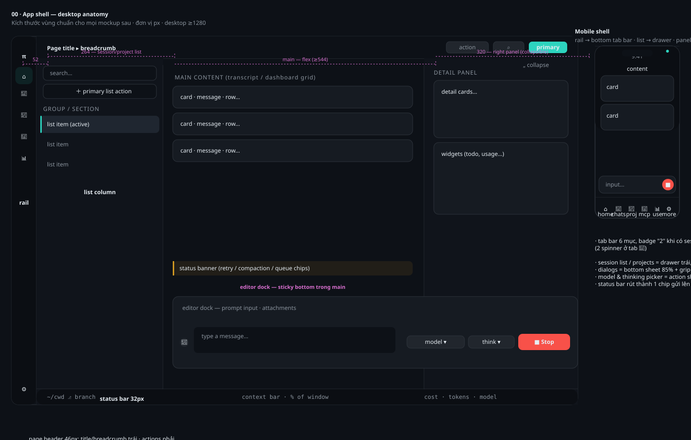
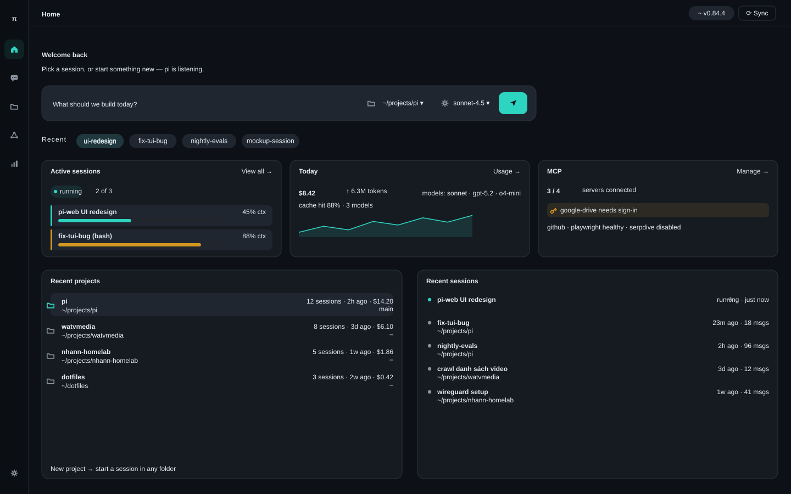
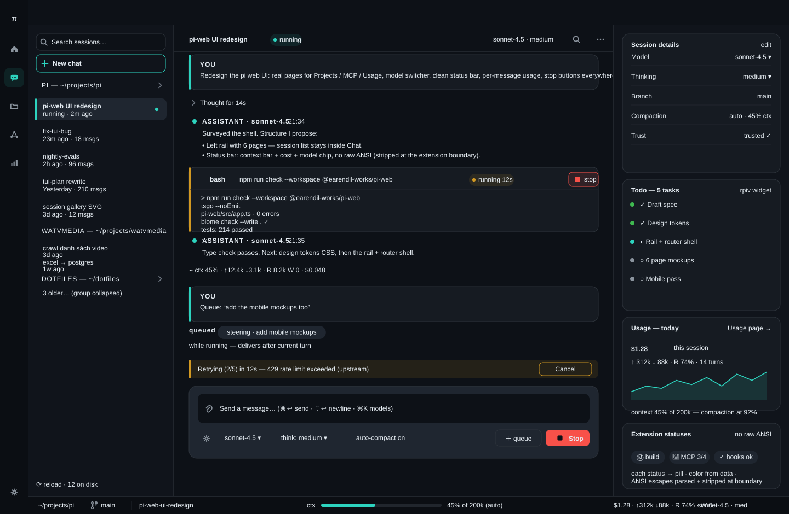
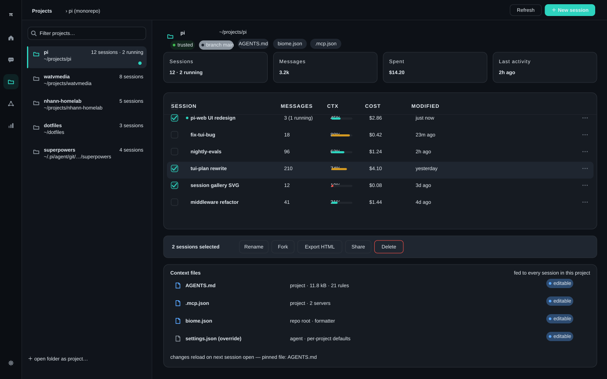
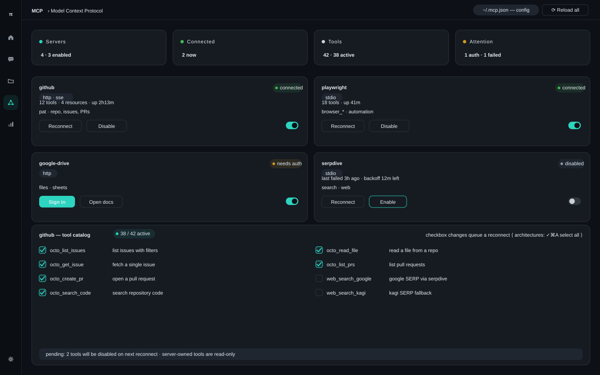
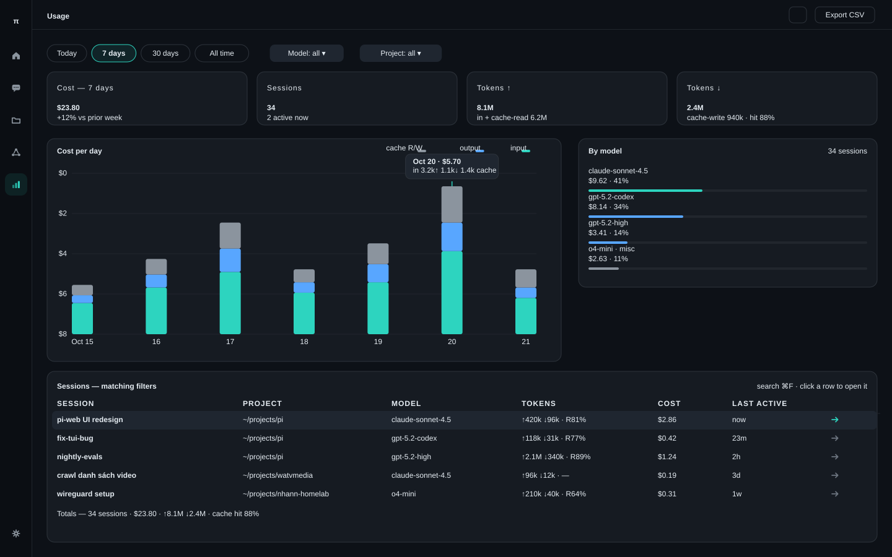
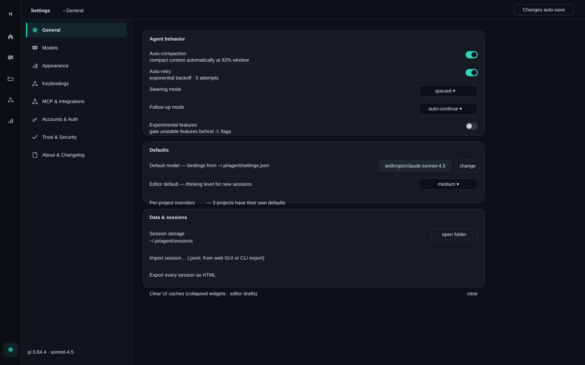
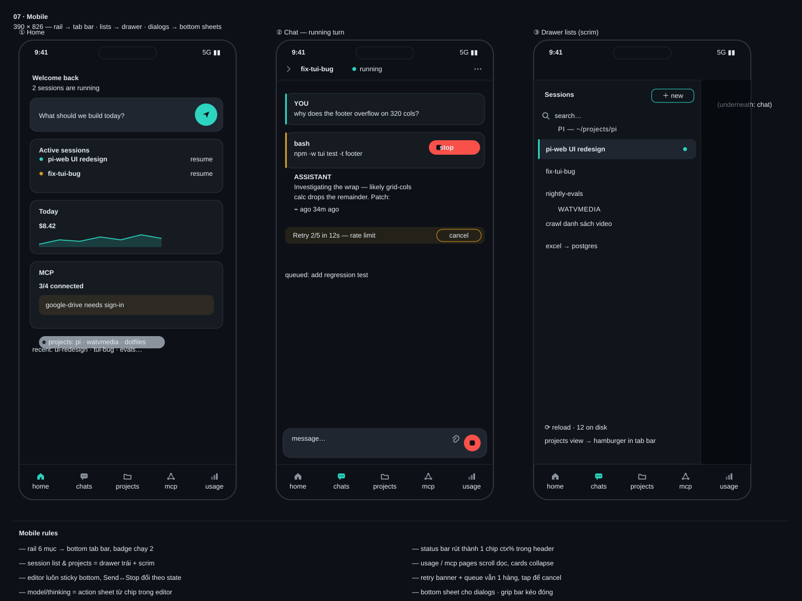

Anatomy: icon rail 52px · page header · list column · main · right panel · editor dock · status bar. Kèm khung mobile (tab bar dưới, drawer) ở bên phải.

Nhập prompt nhanh cho session mới, thẻ tổng quan active sessions / usage hôm nay / MCP health, recent projects & sessions.

Trang néo nhất: session list, message cards, tool cards có nút stop, usage line từng message, retry banner, editor dock với Send↔Stop, status bar context/cost/model. Right panel cho session details + widgets (todo…).

Danh sách project trái, chi tiết phải: stats, bảng sessions đầy đủ, multi-select actions (rename/fork/export/delete), context files.

Stat tiles, server cards có enable/disable switch + reconnect + sign-in, card mở rộng hiện tool catalog với checkbox bật/tắt mỗi tool.

Bộ lọc range/model/project, stat cards, chart cost theo ngày, breakdown theo model, bảng chi tiết từng session.

Left nav theo section (General, Models, Appearance, Keybindings, Auth, MCP, Trust, About). Mockup hiện section General; các section khác theo cùng pattern.

Rail thành bottom tab bar; session list thành drawer có scrim; editor sticky bottom với Send/Stop; tool card compact.
